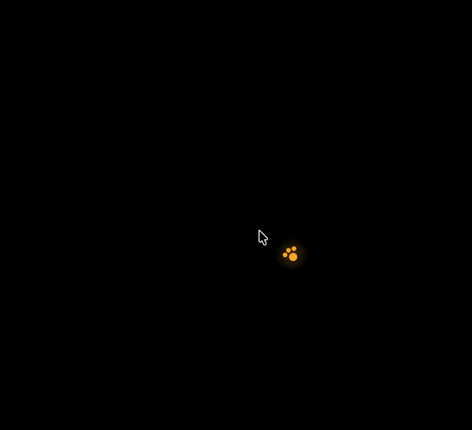

A macOS Agentic companion that can see, reason, act, and respond.
Pip is a native macOS AI agent built for OpenClaw Agenthon 2026. It lives quietly in the menu bar, listens through push-to-talk, captures screen context when asked, reasons locally, and turns tasks into visible desktop actions.
The goal was to make an AI assistant feel present on the desktop without hiding what it is doing. Pip logs its agent steps, asks before risky actions, can point at UI elements, and speaks back using local macOS speech.
Designed around a visible agent loop.
Menu bar companion
Runs without a Dock icon and opens a focused companion panel for voice tasks, status, model selection, and agent progress.
Push-to-talk workflow
Uses a global Control + Option shortcut, Apple Speech transcription, and macOS speech synthesis for a local voice loop.
Screen-aware reasoning
Captures screen context with ScreenCaptureKit during interactions, then sends the task and visual context to a local Ollama model.
Local tools with confirmation
Can open apps or sites, organize Desktop files, create notes and reminders, run browser tasks, and export research summaries with user approval where needed.
Built to make agent behavior visible.

Watch the full demo to see the companion behavior, desktop interaction, and agent loop together.
Open YouTubeConnecting speech, screen context, local models, and desktop automation.
The app combines a SwiftUI and AppKit shell with native macOS services: Apple Speech for transcription, ScreenCaptureKit for screenshots, Accessibility and keyboard events for UI operation, and NSSpeechSynthesizer for local voice feedback.
The reasoning loop uses Ollama locally by default, with support for stronger local vision models when available. A small Node.js sidecar handles browser-oriented automation paths, while native Swift executors manage local tasks and confirmation flows.
Making autonomy legible instead of mysterious.
Pip helped me explore what it means for an agent to operate on a real desktop while still being understandable. The most important design constraint was not just what the agent can do, but how clearly it shows each step before taking action.
The project sharpened my macOS development, screen-capture workflows, local AI integration, voice interfaces, tool execution boundaries, and the product design of AI systems that need trust as much as capability.